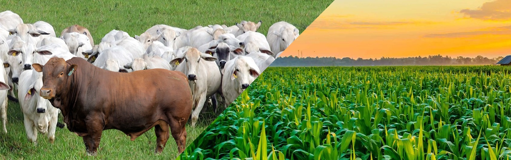

O objetivo do melhoramento genético é o de avaliar características de interesse econômico em um animal para obter a predição dos valores genéticos. Ou seja, visa obter procedimento estatístico adequado para separar os efeitos genéticos aditivos dos demais. O melhoramento genético oferece vários benefícios aos produtores. No entanto é preciso que se tenha alguns cuidados durante o processo. Por isso, é preciso considerar algumas qualidades na hora de escolher a raça, que se adaptem ao clima da região e garantir melhor desempenho. Além disso, também deve se considerar o tipo de reprodução. Para garantir que será feito a escolha certa faça os exames necessários, bem como avaliar o custo-benefício do animal escolhido. Enfim, para se ter sucesso em melhorar o seu rebanho, precisa ter uma boa definição quanto aos critérios selecionados.
Com o avanço da engenharia genética e da biotecnologia, o desenvolvimento de novos cultivares com diferentes atributos genéticos ficou mais preciso e eficiente e, eventualmente, mais rápido. O pesquisador interfere de forma controlada e intencional no DNA (ácido desoxirribonucleico, molécula em forma de dupla hélice que é a base da hereditariedade), troca genes e alcança a meta esperada para aquela semente, sem que ela perca as características que se pretende conservar. Assim, produzem-se organismos geneticamente modificados (OGM) com o objetivo de enfrentar diversos desafios, como a demanda por alimentos, a desnutrição humana, as mudanças ambientais e a sustentabilidade.